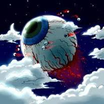
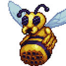
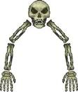
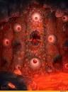
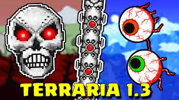
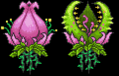
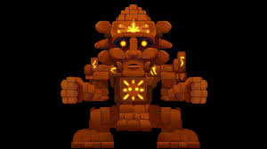
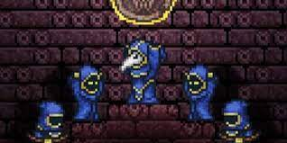
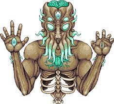

Terraria это видео игра-песочница. Здесь мы появляемся в мире где за равновесие в мире сражаются 3 мира: Багрянец, Порча и Святые земли.
1.Мы появляемся в мире где нам предстоит существовать. Но до нас все было иначе. Во время сражений миров появляется всемогучий завоеватель-ктулху он сеят везде хаос и уничтожает всех. Лишь старая команда дриад смогла поделить его на глаза, кости, мозг, и плоть. В нашем мире мозг ктулху начал существовать в багрянце, глаз охотиться за нами, а кости находятся в заточении будучи проклятием одного старика. Кучка культистов хотят возродить ктулху и заставляют механика создавать механические детали-протезы для ктулху. в то же время ктулху на луне создает новое тело.
Мы появляемся в мире рубим дерево создаем простенький дом наступает ночь и мы убиваем кучку зомбей и странных летающих глаз. Мы спрашиваем у нашего друга-гида что за линзы нам выпали с глаз на что он отвечает что нам рано создавать такое.
Мы идем в шахту добываем ресурсы создаем броню и оружие после чего спрашиваем у гида готов ли я понять что это.
Он отправляет нас в багрянец к алтарю где мы создаем из 6 линз странный глаз.
вдруг на нас нападает огромный глаз. Мы убиваем его.
Мы спрашиваем у гида что делать дальше. Он отправляет нас в джунгли.
Мы находим огромный улей с странной пчелиной маткой не похожей на других. Мы уничтожаем её и появляется огромная пчела.
Мы её убиваем.
Походив по джунглям мы возвращаемся домой. Строим дома для новых жителей
поселения. К нам приходит дриада, подрывник, оружейник и маляр.
7. Мы отправляемся на иследование мира и находим странное строение где ходит старик. Узнав что он делает мы дожидаемся ночи и снимаем с него проклятие. Появляется огромный скелет с 2 руками и черепом.
Мы его убиваем а старик приходит к нам и начинает продавать ткань.
8. Мы отправляемся глубоко под землю и находим огромное место кишащее лавой странными строениями и рудой. Мы создаем огромную дорогу по всему аду и убиваем разных мобой, добываем руду.
9. Мы забираем домой странную печь куда помещаем руду и обсидиан получая руду. Создаем полную броню из слитков и мечь. Достав свои старые мечи с особенностями мы создаем отличный мечь.
10. Мы убиваем моба над лавой держащего за лапы что то. На нас нападает огромная стена плоти.
Мы убиваем её.
11. В мире появляется святые места, а багрянец расспространяется очень быстро.
12. По совету гида мы идем в багрянец и уничтожаем молотом алтари.
13. Отправляемся в шахту за новыми рудами.
14. Создаем броню и оружие.
15. Убиваем Скелетона-Прайма, Близнецов, и Уничтожителя.
16. Создаем кирку из святых слитков.
17. Отправляемся в джунгли и видим цветок. уничтожаем его и появляется огромный цветок агрессивно настроенный на нас.

Убиваем его.
18. Бродя по джунглям находим данж ящеров. Очищаем его от ловушек находим батарейку ящщеров. поставив её в страннный алтарь призываем голема и убиваем.
19. Отдыхая отправляемся к океану и видим что в данже где был старик несколько культистов прекланяются какой то печати. убиваем их и вызываем их главаря культиста и убиваем его.
20. Уничтожаем 4 башни луны.
21.Появляется огромный лунный лорд с которым мы сражаемся и убиваем.
22. Вы чемпион террарии!